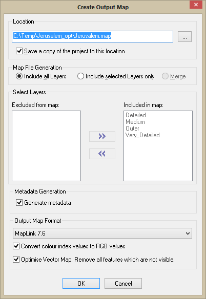

Create the Output Map Dialog
The Create Output Map dialog allows you to specify the location to save the map too. In addition you also have the option to save a copy of the Map project to the same directory,
Three options are available for output map creation:
This is the default option, and should normally be selected except in the case of large multi-layer maps, when one of the options below may be found more suitable.
- Include selected layers only.
Sometimes it may be preferred to generate only a subset of the layers in the map. For example, one or more of the layers may be very time-consuming to generate, in which case there may be a need to check the contents of the other layers without having to regenerate all layers. This option allows you to create a new map with just the selected layers included.
- Merge - Since MapLink Pro 5.0, this option has been disabled due to issues with attribute handling and raster layer generation. It may be enabled in a future release.
The more complex options are:
- Metadata Generation - This is information extracted from the source data. This can be read using the MapLink Pro Metadata library.
- Output Map Format - The TMF version to output your map as. This corresponds to the MapLink Pro version number. Select the version you wish to output the map as. This should be the version your deployed runtime requires. The default version is either the latest version or the version specified in the default Studio template. See also Old Map Formats
- Convert colour index values - to RGB values – This option converts colour index values contained in the map to RGB. This option is only available when saving to versions 5.4 or higher.
- Optimise Vector Map - This option post processes a map to optimize the contents by removing all features that are not visible and to remove any redundant group levels. This can reduce the size of a map and improve the drawing performance. Careful consideration should be given as to whether to apply this to Runtime Projected map as the removal of features which are not drawn may change the output extent...
